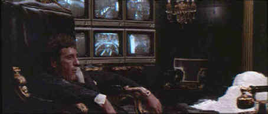

Universal/1983/170m/WS 2.35
The first half of the film depicts the rise of Pacino's Cuban immigrant undesirable, Tony Montana, from North Miami Detention Center buried under a cloverleaf of expressways to a life in opulent palatial decadence atop a white cocaine mountain. Laced with violence often bordering on the offensive, it is nevertheless an integral element of this despicable dissection of life in the land of the drug lords.
 |
Tony Montana awash in an ocean of cocaine. ©Universal |
Pacino's performance is
obviously central to the success of the film and it is his fascinating
interpretation(accent and all)of amoral depravity that grips the audience by the throat
and carries it along his march to the top. When the inevitable fall begins the film
stumbles, never quite recovering the force of earlier sequences. Pacino performance
likewise suffers the fate of the entire production, although the film, viewed as a whole
is immensely successful.
Pacino has excellent support from what the future has proven to
be an virtual all-star cast, from Michelle Pfeiffer's empty paramour Elvira, to a glowing
Mary Elizabeth Mastrononio as Tony Montana's sister. Steven Bauer, Robert Loggia, Harris
Yulin, and F. Murray Abraham are all excellent as well.Further support is achieved through
a thoroughly appropriate score by Georgio Moroder.
Sadly, the
DVD is an absolute disaster. Colors are bleeding all over the place, bright images bloom
indiscriminately. The occasional scene is sharp, but the image is mostly soft. It's doubly
frustrating since this film was beautifully lit and photographed by John Alonzo. The disc
looked so bad I stopped the play to check that something hadn't thrown my projector
convergence out of wack. Straight edges jump and ring excessively. Check out the marquee
or the interior ceilings at The Pelican Club. The segment at Tony's mother's house is mass
of jumping wires and picket fence elements. The sound quality is even questionable.
Dialogue seems distorted in the opening scenes at North Miami Detention Center. What's
truly eye-opening is once you get a look at the included out-takes. They look far better
than the finished film as presented here. Out-takes simply never look better than the
finished product. On the positive side, the out-takes are excellent, giving some
alternative views of scenes in the movie and additional insight into the character of Tony
Montana and the theme of Scarface. This special edition DVD also includes a
nicely made making of documentary.